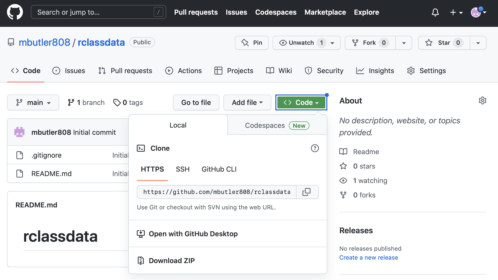
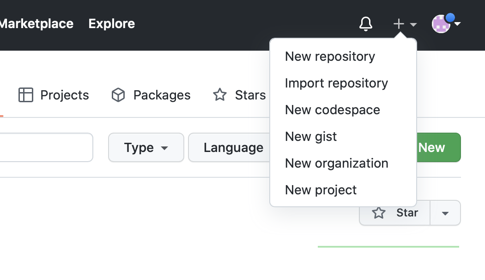
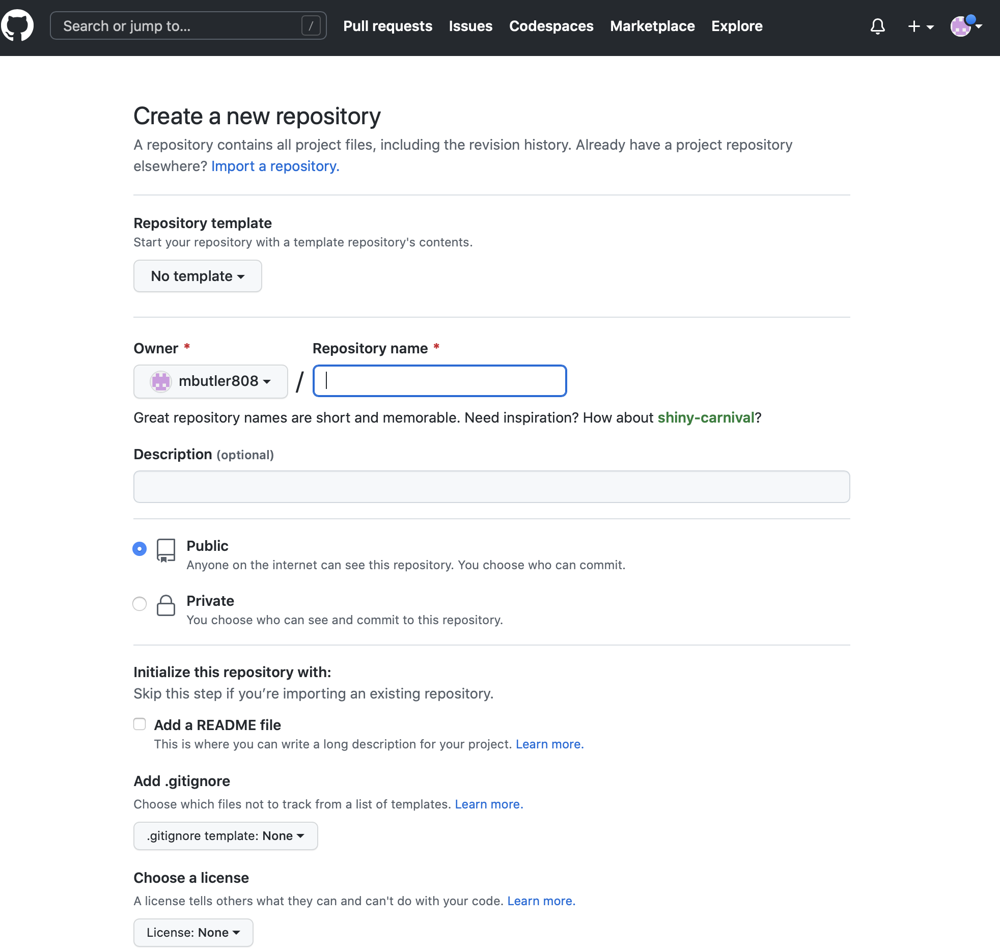
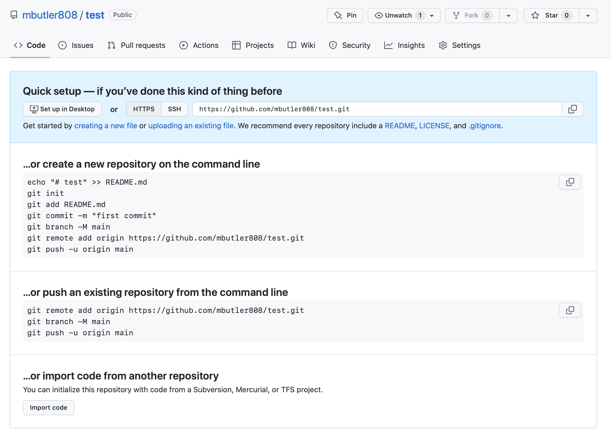

Lecture materials
Helpful references for this lecture
- Happy Git with R from Jenny Bryan
- Chapter on git and GitHub in
dsbookfrom Rafael Irizarry - GitHub introduction in module 1 from Andreas Handel
Acknowledgements
Material for this lecture was borrowed and adopted from
Learning objectives
Learning objectives
Last time, you should have created and set up a GitHub account.
At the end of this lesson you will:
- Know what Git and GitHub are.
- Know why one might want to use them.
- Have created a repo and executed basic push/pull commands.
Introduction to git/GitHub
This document gives a brief explanation of GitHub and how we will use it for this course.
git
Git is software that implements what is called a version control system for a repository of files (also known as a repo). The main idea is that as you (and your collaborators) work on a project, the git software tracks, and records any changes made by anyone.
GitHub is an online server and user interface that also provides powerful tools for distribution of your repository, bug tracking, collaboration, and also allows you to create easy websites for each repository.
Git and GitHub together provide an organized way to track your projects, and all of the tools you will need in this course are free.
It is very well suited for collaborative work, as it was developed by Linus Torvalds (in about 10 days of coding!) for collaborative software development of the Linux kernel pretty interesting interview with Torvalds. What it did really well was distributed control, and allowing everyone to have their own copy of the repository.
Git/GitHub is now the dominant version control system with GitHub hosting over 200 million repositories worldwide! It is used very broadly for all kinds of repos now including data science projects, book projects, courses, and anything that needs collaborative management of mostly text files.
Another great and fun read about Git/GitHub and why it is a great tool for data analysis is in this article by Jenny Bryan.
What to (not) use Git/GitHub for
GitHub is ideal if you have a project with (possibly many) smallish files, and most of those files are text files (such as R code, LaTeX, Quarto/(R)Markdown, etc.) and different people work on different parts of the project.
GitHub is less useful if you have a lot of non-text files (e.g. Word or PowerPoint) and different team members might want to edit the same document at the same time. In that instance, a solution like Google Docs, Word+Dropbox, Word+Onedrive, etc. might be better.
GitHub also has a problem with large files. Anything above around 50MB can lead to very slow syncing and sometimes outright failure. Unfortunately, once GitHub has choked on a large file, it can be quite tricky to fix the repository to work again. This is because the ENTIRE history is saved, including the addition of the huge file. Therefore keep large (>50MB) files out of your GitHub repositories. If you have to work with such files, try to reduce them first before placing into the GitHub repository. Or as alternative, place those files in another sync service (e.g. Dropbox, OneDrive, GoogleDrive) and load them from there.
Finally, if you have data, you need to be careful since by default, GitHub repositories (the GitHub name for your projects) are public and everyone can see them. You can set the repository to private, but you need to be careful that you don’t accidentally expose confidential data to the public. It is in general not a good idea to have confidential data on GitHub. First anonymize your data enough that it is not at risk of identifiability, then you can place it in a private repository. If you put it public, be very careful that you only make things public that are ok to be made public.
Tip
- Git/GitHub has version control features like a turbo-charged version of “track changes” but more rigorous, powerful, and scaled up to multiple files
- Great for solo or collaborative work
- Saves the entire history of every change made
- Allows for multiple verisions or “branches” to be developed and later merged
- GitHub allows distributed collaboration (potentially among complete strangers) and has greatly promoted open-source software development, collaboration, distribution, and bug/issue tracking for users to get help
- GitHub allows webpages for your projects or repositories
Note that other interfaces to Git exist, e.g., Bitbucket, but GitHub is the most widely used one.
Why use git/GitHub?
You want to use GitHub to avoid this:

To learn a bit more about Git/GitHub and why you might want to use it, read this article by Jenny Bryan.
Note her explanation of what’s special with the README.md file on GitHub.
How to use Git/GitHub
Git/GitHub is fundamentally based on commands you type into the command line. Lots of online resources show you how to use the command line. This is the most powerful, and the way I almost always interact with git/GitHub. However, many folks find this the most confusing way to use git/GitHub. Alternatively, there are graphical interfaces.
- GitHub itself provides a grapical interface with basic functionality.
- RStudio also has Git/GitHub integration. Of course this only works for R project GitHub integration.
- There are also third party GitHub clients with many advanced features, most of which you won’t need initially, but might eventually.
Note: As student, you can (and should) upgrade to the Pro version of GitHub for free (i.e. access to unlimited private repositories is one benefit), see the GitHub student developer pack on how to do this.
Getting Started
One of my favorite resources for getting started with git/GitHub is the Happy Git with R from Jenny Bryan:
It truly is one of the best resources out there for getting started with git/GitHub, especially with the integration to RStudio. Therefore, at this point, I will encourage all of you to go read through the online book.
Some of you may only need to skim it, others will need to spend some time reading through it. Either way, I will bet that you won’t regret the time investment.
Using git/GitHub in our course
In this course, you will use git/GitHub in the following ways:
- Project 0 (optional) - You will create a website introducing yourself to folks in the course and deploy it on GitHub.
- Projects 1-4 - You can practice using git locally (on your compute environment) to track your changes over time and, if you wish (but highly suggested), you can practice pushing your project solutions to a private GitHub repository on your GitHub account (i.e.
git add,git commit,git push,git pull, etc) .
Learning these skills will be useful down the road if you ever work collaboratively on a project (i.e. writing code as a group). In this scenario, you will use the skills you have been practicing in your projects to work together as a team in a single GitHub repository.
Clone a repo to your local directory - Easy!
Cloning an existing repo from GitHub is easy. Letʻs clone the rclassdata repo to our local git folder within your Documents folder. 1. Go to https://github.com/mbutler808/rclassdata and click on the green <>Code button and copy the URL.

- In your Terminal or CMD prompt, navigate to your git folder (create one in Documents if you donʻt have one already), and clone the repo:
Terminal
pwd # or dir on PC
cd ~/Documents/git # navigate to your git folder
git clone https://github.com/mbutler808/rclassdata.gitIf you set up your personal access token, it should appear on your computer! If not, set it up following these instructions
Make a GitHub repo started from your local files
Suppose you have some files on your computer and youʻd like to make them into a repo. For this example, weʻre going to make a repo called test
- Create a folder Documents/git directory) called test and copy some files there.
- Go to your GitHub account and create a new repository. Click on the small black + on the top right corner

- Give your new repo a name (“test”) and choose to create a blank repo with no README.md or .gitignore. We can add them later.

- You will see the following giving you helpful hints for linking your GitHub repo with your local repo.

We will follow the first set of instructions, slightly modified. By line of code below:
- First we will create our README.md file,
- git init - intializes the local repo (only need to to this once - it sets up the git tracking).
- Add (. = all) our files and commit them to the repo.
- Create a commit message.
- Renames the local branch to main.
- We use “git remote add origin URL” to connect the remote repo (=“origin” on GitHub) to our local repo.
- Finally we push our local files (in main) up to the remote (to a parallel branch main on origin).
Be sure to copy the appropriate URL for your own GitHub repo.
Terminal
echo "# test" >> README.md
git init
git add .
git commit -m "first commit"
git branch -M main
git remote add origin https://github.com/mbutler808/test.git
git push -u origin main- Check your remote repo. The files from your computer should be there!
- Now try pushing up another change. Make some edit to one or more local files.
- Add, Commit, Push:
Terminal
git add .
git commit -m "made a small change"
git push origin mainCheck your remote repo. Did it go up? Well done! 😍
Your local files and your GitHub repository files are now synced!

A word
Sooner or later, you will encounter a merge conflict. That happens if the same file(s) changed both locally and on GitHub.com. That can happen if multiple people work on the same files, or if you work on multiple computers and forget to always push/pull before and after you work on a project. Donʻt get discouraged, this is solvable!
Sometimes you have to do it manually. Moving the offending files out of your local repository, then doing the merge and after that adding the updates again can help. If you know that one source is the definite one, you can force a push or pull. A more advanced approach is to use branches.
Terminal
git push --force
Warning
- The main danger is that a force push or pull will force git to write over a conflict, and can possibly destroy someone elseʻs work. If youʻre the only one on the repo, then itʻs only your changes that youʻll lose
- Just be aware but donʻt be afraid to practice. You can always revert back.
- See the help page for git push. See the -f or –force flag. Itʻs terse computer help, but if you make the effort it will start to make sense.
- Iʻll link a more tutorial type resource later
Post-lecture materials
Final Questions
Here are some post-lecture questions to help you think about the material discussed.
Questions
What is version control?
What is the difference between git and GitHub?
What are other version controls software/tools that are available besides git?
Additional Resources
Tip
- git and GitHub in the
dsbookby Rafael Irizarry